1. Turn on the “LASER IN USE” switch on the wall.
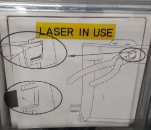 2. Follow the order of the labelled switches starting with stage
control (1) (switch is at
the back of the box). The epifluorescence lamp (2)
is not necessary for confocal microscopy (only for
observing fluorescence by the eyepiece).
3. Log in as Leica User and start LAS-X software.
4. Confirm the selection; make sure the microscope DMI8 is selected. In case you need very high scanning speed (8 kHz), you can select the resonant scanner.
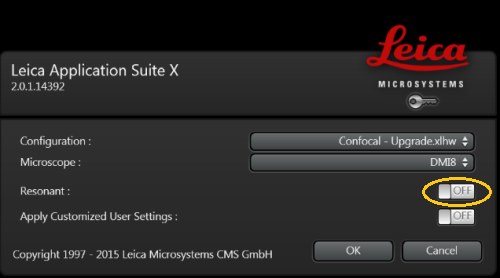5. Load the sample (be gente with the galvo-scanner). To focus and find the sample using the eyepiece, you can control the microscope by the touchscreen panel. It allows you to select objectives and the contrast mode - transmitted light (brightfield, DIC, polarised light) or epifluorescence (and select an appropriate filter set; provided the epifluorescence lamp is on). Focus the sample using the focus knob. There is a switch next to it to toggle between course and fine move (fine is really slow).
| Notes on the galvo-scanner: |
|
| Notes on objectives selection: |
|
1. Make sure you have saved your data and turn off LAS-X software.
2. Move the objective to the escape position and remove your sample.
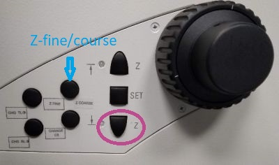3. If you have used an immersion objective, wipe it clean. Use the lens cleaning tissue. For cleaning oil immersion, moisten the tissue at the solvent dispenser. Always wipe the objective only once, in one direction. If this is not sufficient, repeat with a new piece of tissue. Never reuse the tissue.
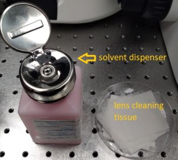 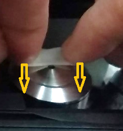4. Shut down the computer.
5. Turn off the numbered switches in the reverse order, starting from (6). Important: If you have been using the Argon ion laser, wait after turning off the software for a few minutes until laser exhaust fan switches off (audible) before proceeding to the hardware switches (5 - 3).
6. Turn off the “LASER IN USE” switch on the wall.
7. Cover the microscope with the dust cover.
8. Make sure you leave the microscope room clean. Spray with 70% ethanol and wipe any surfaces that could have been in contact with biological material. Do not leave any samples or any other belongings behind.
| Notes on the epifluorescence lamp: |
|
| Notes on the Argon ion laser: |
|
1. In the laser control portion of the main window, press a button (any instance of the button, they all do the same)
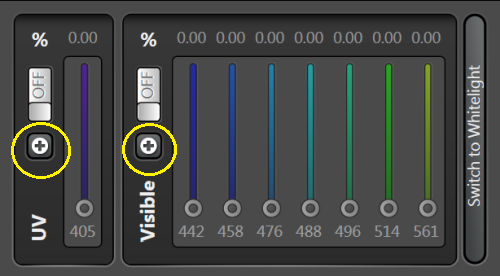and a pop-up window will appear in which you can switch on the lasers you intend to use. The output power of the white-light laser (WLL) and Ar+ laser can be also set here (this controls the power of the laser output, the actual power at the sample is further regulated by an acousto-optic modulator just like the power of all the other lasers). Attention: do not set the power here above 80%; note that the reference laser powers at the sample have been measured with WLL at 70% and Ar+ at 50%.
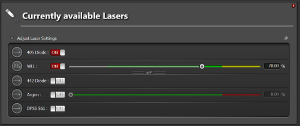2. There are two different types of lasers (supercontinuum white-light lasers - WLL and monochromatic laser lines - Conventional) and in connection with that twodifferent laser-control user interfaces.
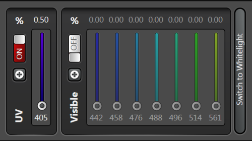The Conventional laser mode controls the Argon ion laser (458 nm, 476 nm, 488 nm, 496 nm and 514 nm) and diode or solid state lasers (the remaining lines). To be able to control the lasers, turn them ON by the software switch (separate switches for 405 nm and for the rest of the laser lines) after which you'll be able to control the laser power by the sliders. Use the reference laser powers table to estimate the actual power at the sample.
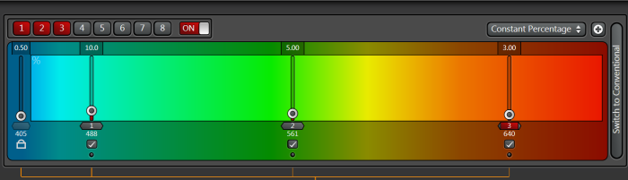The WLL mode allows you to select up to 8 arbitrary laser lines from the range of 470 nm to 670 nm. The laser needs to be turned ON by the software switch after which you'll be able to select the laser lines and set power for each line. Use the reference laser powers table to estimate the actual power at the sample.
1. There are two types of detectors: standard photon-multiplier tubes (PMT) and hybrid detectors (HyD). The latter combine principles of PMTs with those of avalanche photodiodes and are superior to the standard PMTs in quantum efficiency. They are the detectors of choice especially for low-light applications.
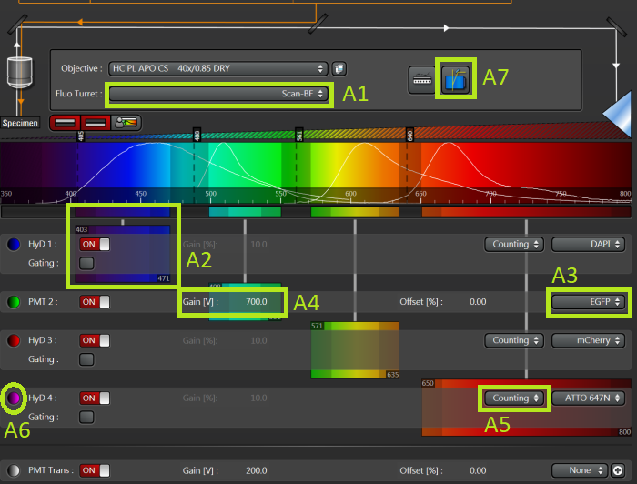The microscope is equipped with 3 HyDs and a PMT, allowing together for 4 parallel fluorescence detection channels. There is one more detector, transmitted light PMT, which detects the laser light that has passed through the sample. It can be then used to create a brightfield or DIC (depending on the setting of the condenser [A1]) image of the sample. This image comes at no additional cost in terms of acquisition time or exposure of the sample to light and provides information complementary to the fluorescence channels.
2. Turn on the detectors you want to use and set up their spectral ranges [A2] (from the shortest to the longest wavelength as you go from detector 1 to 4). You can display spectra of fluorophores [A3] from quite a large database in the plot above the detector panel and use them as guidelines for setting the spectral ranges.
3. Set the gain of the PMTs [A4] - for fluorescence channels something from the range 500 - 800 V will usually provide good results (based on the fluorescence intensity); much lower gain is usually sufficient for PMT Trans.
4. Set the operation mode of HyDs [A5] - you can select between Counting (the output is the number of detected photons) and Standard (output is the accumulated charge on the detector). Counting mode is advantageous especially for week signals, where it gives better signal-to-noise ratio. Do not use gain for HyDs, even in standard mode - it is not a real gain, just digital gain and as such brings no improvement to the images (you can easily multiply images by a constant larger than 1 in FIJI any time later), rather to the contrary (increased risk of image saturation). Counting mode offers one more option in conjunction with the WLL (pulsed at 80 MHz) - Gating. This means that we are collecting only photons coming within a certain part of the interval between two laser pulses (which is 12.5 ns); this can be used e.g. to suppress autofluorescence with very short fluorescence lifetime by rejecting photons detected shortly after the laser pulse (e.g. within the first 1 ns).
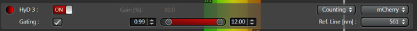5. Set the LUTs (colours) [A6]
in which the images from individual detectors will be displayed.
6. All the fluorescence channels we have set up so far would be detected simultaneously. This is often not optimal because of spectral crosstalk between channels. E.g. in the example above most of the fluorophores shown would contribute to some extend to the subsequent channel and the extent can be quite large as seen for DAPI in the EGFP channel. In most cases this problem can be alleviated by not exciting all fluorophores simultaneously but one at a time. This can be set up using Sequential scan. Go to Acquisition Mode selection in the left-hand side container (we'll talk about it a few more times later) and select SEQ. [B1].
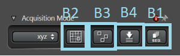A Sequential scan panel will be added to the bottom of the left-hand side container. In each sequence you can select what lasers and detectors will be on simultaneously. E.g. in sequence 1: 405 nm laser and HyD 1 and PMT Trans, in sequence 2: 488 nm line of the WLL and PMT 2, and so on. You can also select whether to switch between the sequences after every line, every frame or every stack. Switching after every line is the fastest and all sequences (that means all fluorescence channels) are acquired almost simultaneously. To allow fast switching after every line scanned, only certain differences between the sequences are permitted (e.g. switching on/off of detectors, changing laser line powers are allowed; changing detector spectral ranges or switching on/off lasers are not allowed). Note that while you can't switch on/off lasers when switching sequences between lines, you can still set laser lines to 0% power.
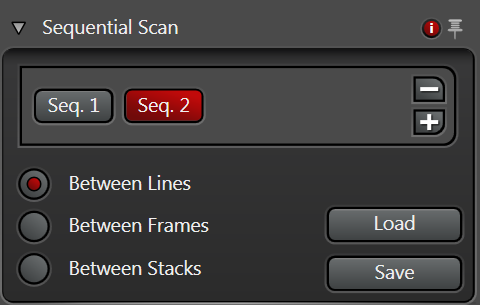7. The AOBS (acousto-optical beam splitter - a tunable component playing the role of the major dichroic) configuration [A7] allow toggling between fluorescence detection mode (AOBS does not transmit the excitation wavelength, default) and reflected light imaging mode for each active laser line.
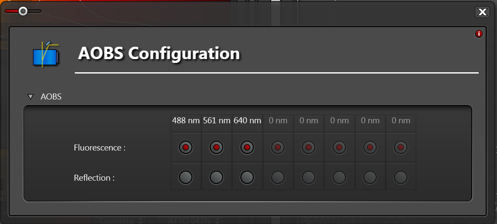1. We'll move now to the left-hand side container below the Acquisition Mode to configure how is the image scanned. We need to define the scanning speed (lines/s) [C1], size of the scanned area (Zoom Factor) [C2] and sampling of the image (Format - into how many pixels will the scanned image be divided) [C3]. Note that the smallest zoom factor is smaller than 1 (the largest possible scanned area; consider zoom factor 1 as the smallest recommended zoom (largest recommended area) in terms of maximising image uniformity and minimising aberrations. Also note that the maximum scanned area is reduced at higher scanning speeds.
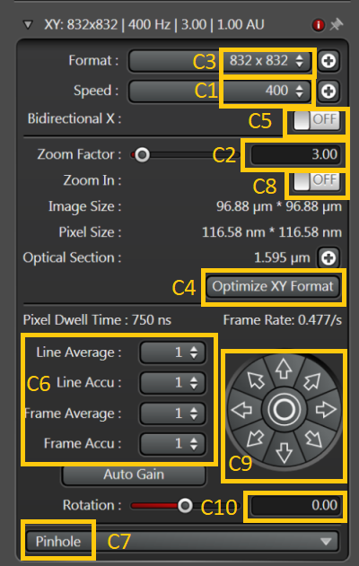2. The sampling is a very important setting as pixels which are too large (too few pixels) will limit the resolution of the image (pixelated image). On the other hand too high number of pixels (too small pixels) will either increase the acquisition time and reduce the pixel dwell time (compromising signal-to-noise ratio). The optimal (Nyquist) sampling is such that the pixel is slightly smaller than a half of the theoretical optical resolution limit. You can set it automatically by pressing Optimize XY Format [C4].
3. Scanning speed can be increased twice by using Bidirectional scan [C5]. Scan artefacts (odd and even lines are shifted with respect to each other) can appear, especially at high zoom factors and fast scanning. Corrections for that can be set (the sliders for Phase X and Y will appear when Bidirectional scan is on). This is an area recommended only for adventurous users.
4. Lines or frames can be scanned repeatedly and the signal accumulated or averaged [C6]. Accumulation is preferable for very low signals in counting mode (on the level of single photons/pixel). Averaging is preferable for higher signals (avoids exceeding the dynamic range and averages out noise). See here for a discussion on whether to scan once at a slower speed or repeatedly at higher speed.
5. Pinhole size is crucial in confocal imaging and it's rather weird its setting is hidden from the first view [C7]. The usual trade-off between resolution and signal is 1Airy unit (AU). Note that AU is wavelength dependent.
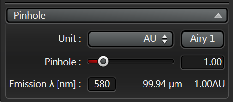6.Other possibilities are zooming in at particular structures in the sample (turn Zoom in on [C8] and draw a ROI with the cursor in the image). Moving the scanned area by small steps in arbitrary direction [C9] or rotating the scanned area [C10].
7. You should be now ready to scan an image of your sample (after loading it and focusing it). See live image by pressing Live in the bottom bar of the software window (Live acquisition doesn't involve accumulations or averaging) or capture a single plane image by pressing Capture Image.
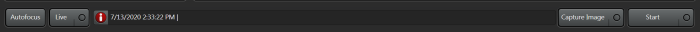8. The image will be displayed in the main window. You can toggle between split channel view and overlay [D1] and switch individual channels on/off [D2]. Histogram can be displayed for each channel [D3] and the image scaling optimised either automatically [D4] or manually by sliders [D5]. 3D rendering of Z-stacks is also available [D6].
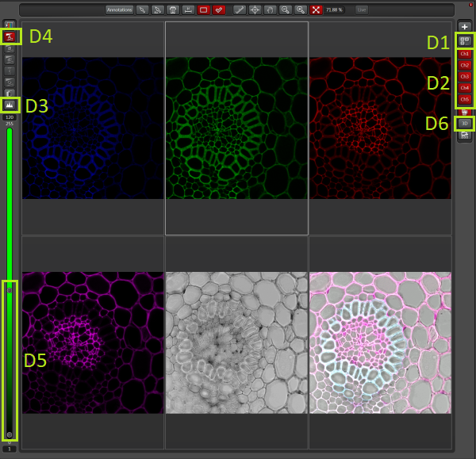| One time slowly or many times fast? |
|
1. Z-stacks are the staple of confocal imaging and can be set in the default mode in a panel in the left-hand side container below the scanning configuration.
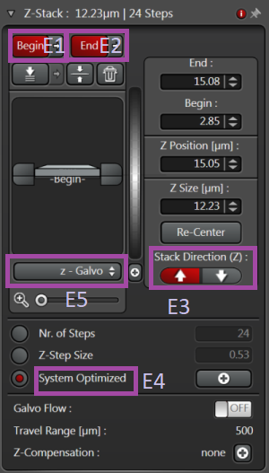2. Focus to the lowermost plane you want to acquire and press Begin [E1], then to the uppermost plane and press End [E2] (or vice versa depending on the stack orientation [E3]). You can set the step manually or used the System Optimized step [E4] (similar to optimising the XY sampling). Scanning can be performed either by the galvo-stage (z-Galvo) [E5] or by the objective focus drive (z-Wide). The galvo is faster and more accurate, but has a limited range compared to the focus drive.
3. Acquire the stack by pressing Start in the bottom bar of the software window.
1. There are two basic types of multi-position acquisitions: large-field scans (moving the stage is used to capture an image of a continuous area larger than the maximum area accessible to the scanner) and acquisitions at discreet positions (useful in combination with time-lapse acquisition when multiple location in the sample can be revisited at each time point. Either of these two can be selected in the Acquisition Mode (the former [B2] and the latter as [B3]).
2. The large field (in the example shown it is 5x5 scanner fields of view) can be used to acquire a preview map of the sample (e.g. in one channel only) and then to navigate the stage to locations of interest e.g. for high-resolution multi-channel scanning.
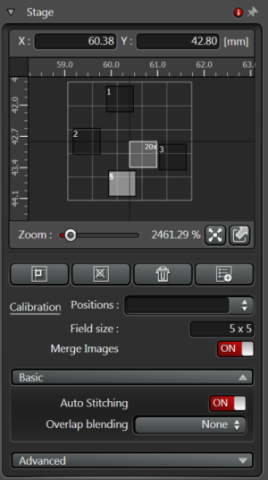3. In the latter mode, a list of discreet stage positions can be created by finding areas of interest in the sample and adding their stage coordinates to the list.
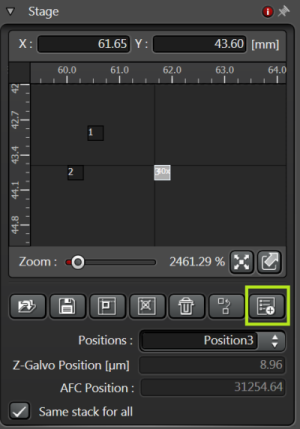1. So far we have used only the default mode which is XYZ. However, other modes are available in the drop-down menu in Acquisition Modes:
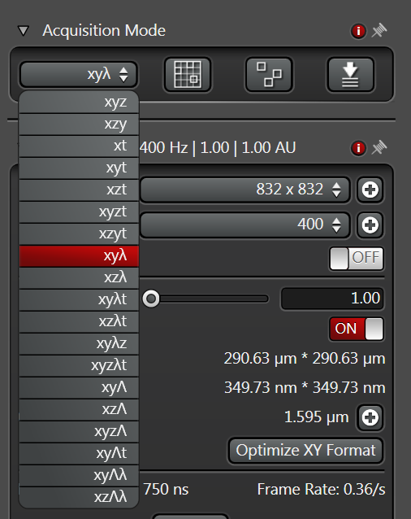2. A slightly different mode is XZY, in which the scanning is done primarily in a vertical plane (XZ) and the other horizontal coordinate is the slowest direction. This is interesting if you are interested mainly in the vertical cross section of the sample. It is possible by using the fast galvo-stage which moves the sample in the vertical direction. When oscillating, the stage may produce high-frequency sound. Sometimes this sound is present if the stage is not scanning (in XYZ mode) because the stage is not well balanced and keeps compensating for any mechanical drifts. Switching between XZY and XYZ modes helps the stage to stabilise.
3. There are also different modes of spectral scans for spectral imaging either in the emission spectra (lower-case lambda) or excitation spectra domain (capital lambda - using the WLL). An example of setting up an emission spectra scan (in the range from 410 nm to 780 nm and 10 nm spectral resolution, using deterctor HyD 1) is shown below:
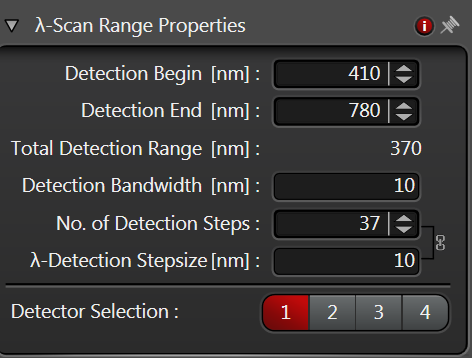 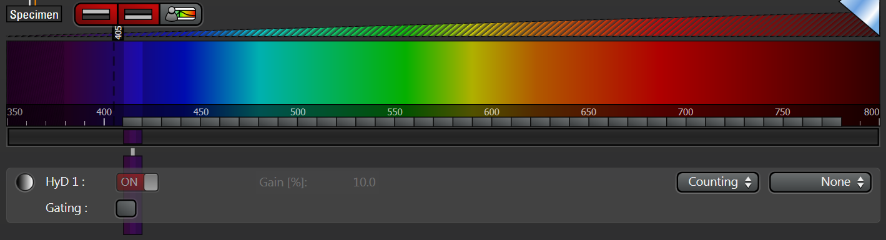The spectrum can be visualised in Quantify tab (as Stack profile). If the spectrum appears too small, right click in the plot area and select "Normalize". If no ROI is selected the spectrum corresponds to the whole image; by selecting ROIs, spectra of different parts of the image can be extracted.
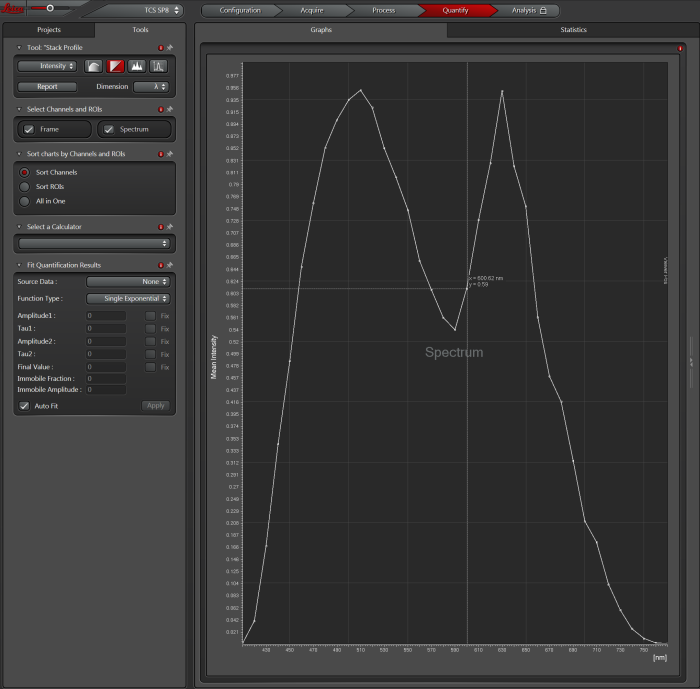4. A straightforward extension of any of the acquisition modes is including the temporal dimension (e.g. XYZt). Below is shown an example of setting up a time-lapse of 100 time points with approximately half a minute interval.
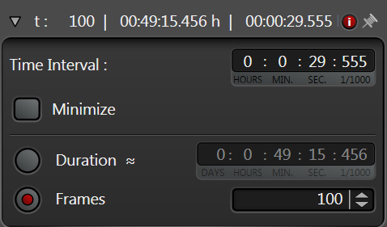1. The microscope is equipped with an IR-laser based hardware autofocus (Adaptive Focus Control). Open the autofocus dialogue in Acquisition Modes [B4]. AFC has two mode of operation - continuous (locks the current focus and holds it - suitable for very fast time-lapses at a single spot) and on demand (refocuses before taking and image, suitable for multi-position experiments). The on-demand mode allows you to select if the focusing should be done for each time point and/or each position or for every n-th time point/position only. If you acquire a Z-stack at each time point and/or position, AFC will maintain the focusing of the central slice of the stack.
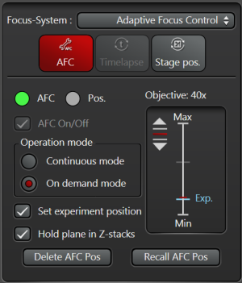1. Images are saved in .LIF format; each .LIF file is an envelope file for a whole project which may contain an arbitrary number of images of arbitrary types. To setup the path for saving, go to Projects tab in the left-hand side container.
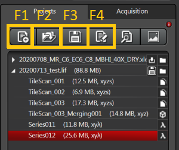You can create a new project [F1], open an existing project [F2] and save the newly created project [F3] (the icon represent a floppy disk which was an ancient medium for storing tiny amounts of data and which may not be familiar to users of younger generation). Each image is saved together with its metadata containing information on acquisition settings. The acquisition settings can be reloaded by selecting an image and pressing "Apply" [F4].